Leveraging DearImGui in Unreal
If we discuss tooling, I'll invariably talk about DearImGui and how it should be an essential part of all developers tool belt. It's just the kind of lib that sets such a high standard of "it just works" that even if you don't have an immediate need, I think you should check it out. On top of that, I strongly believe that knowing about the Immediate mode style of API has some great benefits for development and writing user facing libraries, and this library is an excellent example of that style.
So ! What's the goal today ?
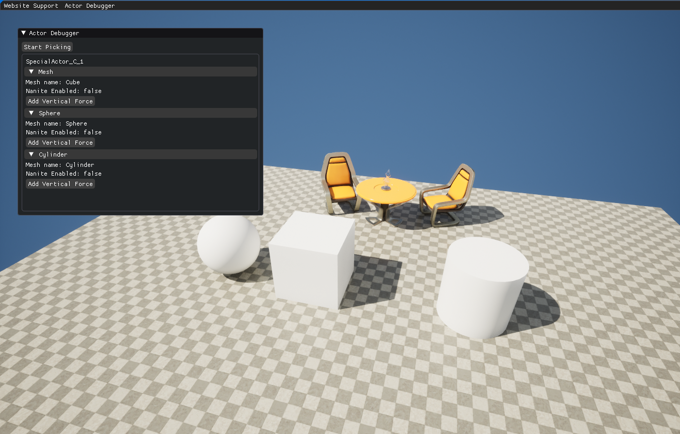
We'll be building this small debugging tool that allows us to pick an actor in the scene with a line trace, and show some data about the Mesh components attached to it. We'll also see how to add buttons that can call arbitrary code on those components. It took me about 30 minutes to build, and we'll see how little UI code we end up needing 😁
Let's walk through the process !
Initial Setup
First of all we need to understand that DearImGui is a completely independent library, it's meant to be plugged into any arbitrary game engine/rendering backend, and as such you can't just go on the imgui github and hope for it to work out of the box in Unreal. As such, in usual Unreal fashion, we want to find a plugin that already does the implementation for us !
Luckily there's a few, I've been using this one : https://github.com/segross/UnrealImGui, unfortunately it stopped support at Unreal 4.26, but if you look at the forks there's a lot of them that supports Unreal >5.0 ! Here's two I can vouch for :
- IDI-Systems seems to be the most up to date : https://github.com/IDI-Systems/UnrealImGui
- BenUI : https://github.com/benui/UnrealImGui
Clone the repo in your Plugins folder, then you'll need to go to your .uplugin and add the following under "Plugins": [:
1 2 3 4 | |
You'll also need to add a dependency in your .build.cs :
1 | |
And now we're good to go !
Create a file named DevGuiSubsystem.h and paste the following inside :
1 2 3 4 5 6 7 8 9 10 11 12 13 14 15 16 17 | |
This gives us a very simple class that's going to have a function called every frame (Tick), and that's instantiated only once at runtime with a valid World (GetTickableTickType makes sure of that).
On the implementation side, create a DevGuiSubsystem.cpp file, and paste the following :
1 2 3 4 5 6 7 8 9 10 11 12 13 14 15 16 17 18 19 20 21 | |
And we're good to go !
Our job now is to fill up that Tick function full of ImGui goodness 😊
A Very Simple Window
To start with, we'll be creating a simple window with a button that will print something, that will be our little Hello World to test that everything works properly 😁
Creating Windows with DearImGui is extremely simple (as is everything as we'll see):
1 2 | |
Strap that to your Tick function, and press Play in Unreal, and you'll see... A very tiny window !
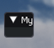
Without any more input on our part, DearImGui will instantiate new windows with enough size to display their content, since we don't have any content in our case, the window is very tiny ! Luckily default windows are rezisable, which makes this a good time to talk about interacting with the UI 😊
Interacting with our Window
If you picked the plugin above, it should automatically register the Unreal command ImGui.ToggleInput. This command make sure the cursor is shown, and that the inputs are routed to the ImGui context. Just type that in the game console and you should now have a cursor !
Alternatively it's also a good place to use our little UFUNCTION to bind it to some keyboard shortcut. Since I'm just in a demo scene I'll be hardcoding the F10 key in my level blueprint (do NOT do this in production 😬)
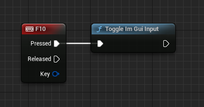
If everything went well, you should now be able to drag the bottom right corner of our window and resize it, showing the title and deep emptyness in all its glory !
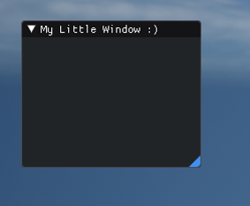
Back to our Hello World
We have a window, we don't have CONTENT, how to fix that ?
The way DearImGui work, you can add content to a window by making ImGui:: calls in between those two Begin/End functions, the library will automatically take care of layouting your elements for you (vertically by default). The library comes with a lot of widgets - some would say an insane amount ! Luckily it's extremely well documented, and comes with an easily searchable and debuggable demo, we'll be opening it later to see. For now let's finish our Hello World.
The function we want to call is void ImGui::Text(const char* fmt, ...); ! It display a simple Text box with the content you want, it's written with the classical fmt, ... that you'll find in the printf family of functions, so we're right at home here ☺
You're code should look like this :
1 2 3 | |
Aaaand, we're done ? 😮
With 3 simple lines of work, we have a full window, and a text block that can display any arbitrary text we want ? Dark magic I tell you.
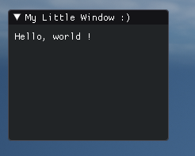
You want some proof we can just show any arbitrary thing ? Well just write this :
1 2 3 4 5 6 | |
And here we go, very simple, very straightforward, perfect for immediate information 😊
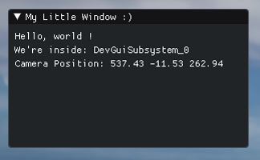
Alright ! At this point I think it's good to talk about the Demo !
Bringing up the Demo
ImGui comes with a full demo of all its features, very easy to search, very easy to copy code from. You'll find its code in imgui_demo.cpp, and to show it you just have to call ImGui::ShowDemoWindow( &bOpenDemo ) ! What's that bOpenDemo you say ? Well it's part of a very common technique to easily spin up ImGui windows without too much fuss that relies on local static variables to persist states :)
A fundamental philosophy of ImGui is that you provide all the external parameters of a widget directly at the callsite, this allows us to construct fairly complex UIs with no setup code (we don't retain any information about the widget state), and as a result we need to do fairly little book keeping to make the widgets behave like we want.
Here the ShowDemoWindow function is expecting a boolean (that it might modify, hence the ptr), that will tell it if it's open or not. We have to store this boolean on our side, you can do it any way you like (member variable, global variable, local static), but I'll show you a way that makes sense for quick prototypes.
Paste the following code outside of your hello world window (make sure you're before the Begin, or past the End !) :
1 2 3 4 5 | |
Now if you press play, you should see the Demo window show up :)
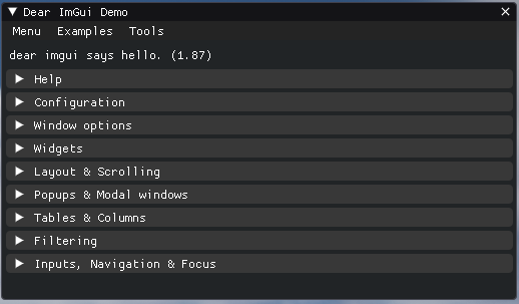
Alright ! Play around with it, check all the beautiful and functional widgets available, compare the widget behavior with code in imgui_demo.cpp (search for strings you see in the UI !)
You'll see that, although the demo window is fairly complex, the actual DearImGui code is relatively simple :) That's one of the big advantages right here, spin up complex UI with relatively little code (try to make an equivalent window in Slate/UMG or any other UI package).
Bonus Round
Can you try to add a button to the Hello World window that will toggle the demo window ? Searching in imgui_demo for how to use specific widgets is a core part of using this library, so if you manage to do it by yourself at this point, you're good to go for any debugging tool you want !
You can jump to the answer here : Jump to answer
ActorPicker with Fries
Ok ! Let's get serious, at this point you should be familiarized with the ImGui library, but we haven't really dealt with Unreal itself. As you start using the lib you'll find some small pain points, mainly due to the usage of UTF16 in Unreal which makes it hard to just send FStrings to the usual calls. In this section we'll build a debugging window with a features that should cover a few things about those interactions, and how to set them up properly.
Let me remind you of the goal ! We'll be making a small window that allows us to pick an actor, show some data, and make a button to interact with that actor 😊
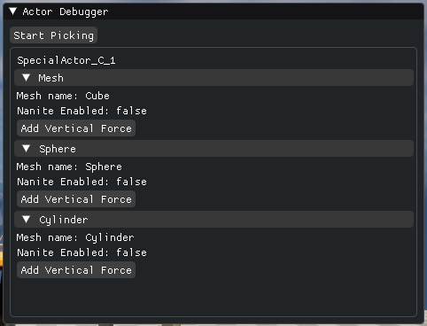
The Picking
First we want to show a window, with a button that allows us to enter a 'pick mode', while in this mode we'll throw line trace through the screen, and if we hit an actor we'll store it in a local variable so we can draw informations about it later !
Let's make the window, the button and some variables for book keeping :
1 2 3 4 5 6 7 8 9 10 11 | |
Simple enough ? We're making a window, adding a button, and swap the button title depending on bIsPickingActor ! If you worked with Slate here you would already have created 2 files and passed some variable around :)
From there, we want to fill up PickedActor ! Next part is only Unreal code (well.. almost, I left a surprise at the end) :
1 2 3 4 5 6 7 8 9 10 11 12 13 14 15 16 17 18 19 20 21 22 23 24 25 26 27 28 29 30 31 32 33 34 35 36 37 38 39 40 41 42 43 44 45 46 47 | |
That's a big code splat 😊 But take your time, read through it, at the end of the day there's no UI code in there, only standard unreal line tracing rituals. Right at the end you can see that we're exiting actor picking mode in a very straightforward way, we just ask ImGui if the left button is clicked, and we're setting our boolean to false ! All the mouse state tracking is done in ImGui's backend.
Ok ! You can put a breakpoint at the PickedActor = line to check if you're actually hitting something ! But we have a UI toolset, why not just display it ?
The Showing
Let's start simple, let's just show the actor's name :)
1 2 3 4 5 6 | |
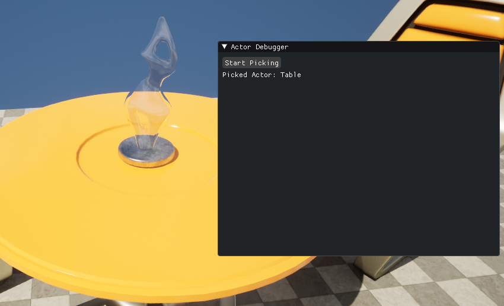
It doesn't look like much ! But we've got the basis of a very powerful tool right there ! We now have full access to any arbitrary AActor pointers in the scene, we can make some UI to display and change any properties, show component information, and if you're feeling courageous, even mirror any actor changes to the default class 😊
But let's continue with the plan. Now we want to list the attached static mesh component, show some information about them, and if we have physics enable, add a button to create a push force to interact live with the scene !
To list all attached component we'll be using the ForEachComponent function :
1 2 3 | |
The ImGui widgets we'll need are ImGui::CollapsingHeader, ImGui::Button, ImGui::Text. We'll also need to use 2 helpers for a reason I'll explain later : ImGui::PushID, and ImGui::PopID.
Let's do it.
We'll want to display the component name in the collapsing header, to do so we'll use Mesh->GetName(), sadly you'll notice that this function returns an FString which, at least on Windows, are encoded as UTF16 strings. Meaning you'll get some 16 bits TCHAR* instead of the standard 8 bits char* that ImGui expects. Luckily there's a straightforward conversion scheme that allows us to go from one to the other :)
1 2 3 4 5 6 | |
Perfect ! We can easily convert FString to the needed const char*. Let's setup our header and add some content ! We'll be showing the mesh name, and if it's Nanite enabled.
1 2 3 4 5 6 7 8 9 | |
Note that I'm using the %ls modifier to print TCHAR* and %s for char*.
Simple enough !
Alright last part, we want to add a button that, when clicked, send a force to the static mesh to make it jump. To test this out I made a simple Actor with 3 static meshes set as Movable and with gravity enabled. The AddForce function will work for us here.
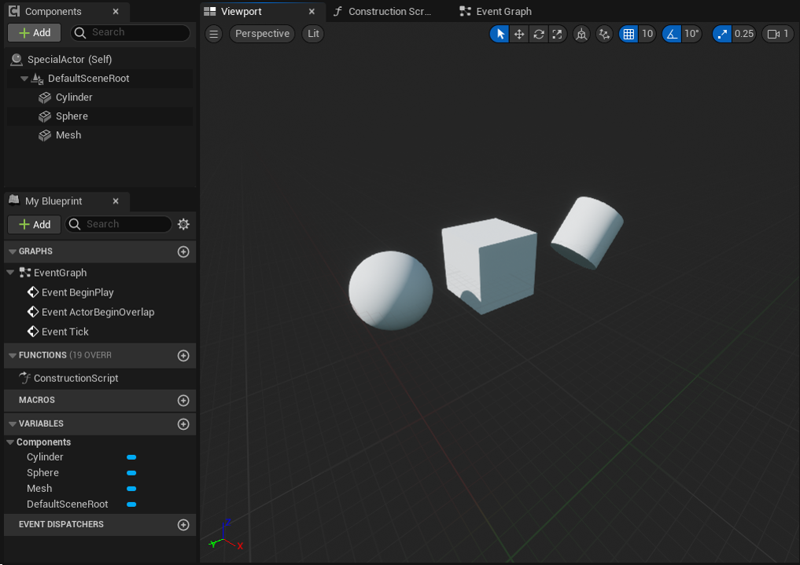
With that added in our scene, we just need the following code !
1 2 3 4 5 6 7 | |
And we're done ! We now have a simple interface, that loops over the static mesh components of the actor we line traced, displays some arbitrary information, and on top of that we have a very simple interactive element to trigger effects on that Actor !
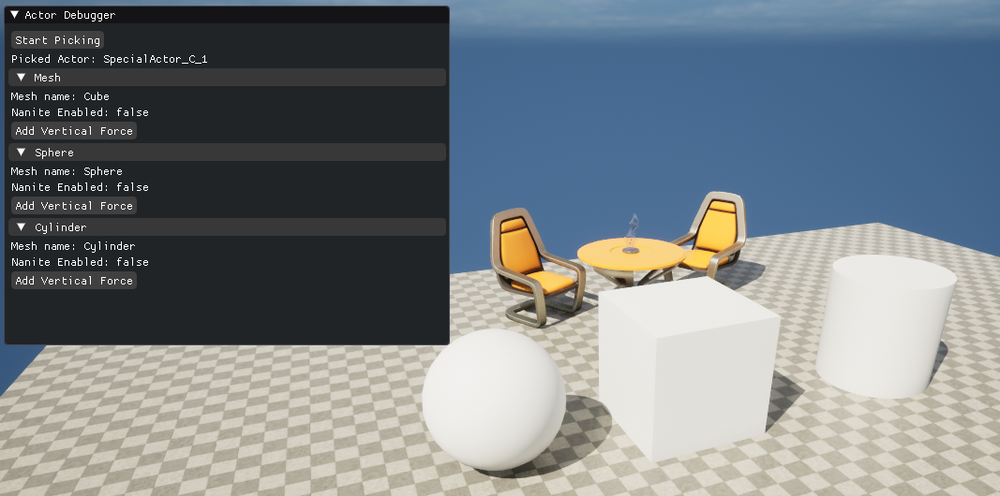
Yay ! If you click the first button it should work perfectly, but if you click the other ones... You might find them broken 😬 Why is that ?
DearImGui IDs shenanigans
So here we need to dig a tiny bit into how DearImGui works behind. When you generate widgets, especially ones with frame-over-frame interactions (like a button answering a click), ImGui stores temporal states about widgets in a table, think stuff like "has the user started a click on this button", "is this list element selected", any info that can't be immediately deduced from the current frame state. For ImGui to track that data between each frame, it tries to generate a unique ID per widget from infos available at the call site. In the case of a button (and in fact everything in DearImGui), you're passing a string that labels the item ! So DearImGui yonks that, hashes it as a 64 bits ID, and use that as a key.
If it were only doing that though, you would quickly be annoyed as you'd build other views with buttons with the same name and them not working... To solve this ImGui also rehash that 64 bits ID with an ID stack, each window has it's own stack, and various widgets push and pops from this stack. So in our case, our buttons are all generated with the same ID stack and the same label, so their IDs ends up the same ! To solve this we can either change the label, or modify the ID stack so when the widget key is generated, it's unique.
Here's both solutions in action in an Unreal pedantic way:
1 2 3 4 5 6 7 8 9 10 | |
1 2 3 4 5 6 7 8 9 | |
Which method you prefer will depend on your specific context, but they're both good to know about 😄
And we're done ! With this we have a nice debugging UI that allows us to pick arbitrary actors in a scene and display any information we want. There's a lot more we can do but this is just a simple demo of what's possible.
The Cherry on Top
We have a debugger, the demo window, a little hello world. As you start developing more tools you might wonder: How to organize everything ? Enter the Main Menu Bar.
It's a simple tool bar DearImGui proposes that shows at the top of the screen. You can push buttons, text, sub-menus... anything really, to that menu bar. So let's set that up !
At the end of your Tick function, write the following :
1 2 3 4 5 6 7 8 9 10 11 12 13 14 15 16 17 18 19 20 21 22 23 24 25 26 27 28 29 30 31 32 33 34 35 | |
And if you enable ImGui's inputs it should show more or less like this :
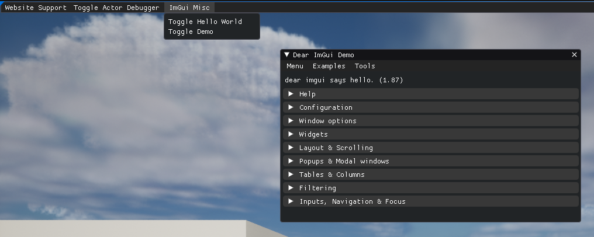
I'm leaving the toggle hello world window as en exercise to the reader 😊
Conclusion
Hopefully you can see how easy and quick we can now develop visualization and debugging tool ! In everything we've written the actual UI code comprised very little, and that's one of the biggest strength of DearImGui, it doesn't get in the way ! From there don't hesitate to just read imgui.h and spend time getting familiar with the imgui demo. You'll find a lot of interesting and useful widgets are available 😊
You can find the complete code we've written here :
Annexe
DearImGui or ImGui
In this article, I've tried to refer to the lib as DearImGui most of the time. If you look online, the term ImGui kinda became ubiquitous with this lib (for good reasons), but ImGui actually refers to Immediate GUI, which is a UI API paradigm opposed to Retained UI.
Retained UI would be your more standard UI library, like UMG/Slate, Windows Form, Qt. The main characteristic is that the UI data book keeping responsability is put in the hand of the user of the library. You have to instantiate stuff (with SNew calls, or NewObject), keep pointers around, check internal states for response... This generally results in very bloated code to describe a UI presentation, and a lot of caching issues.
Opposed to that, Immediate UI posits that you should just be able to describe the UI layout and widgets as a part of the program, and the backend should take care of all the state retention. (read this for more information)
Now DearImGui as a library embodies those concepts ! But there's other libs that are worth taking a look :
There's also ways to write retained UI in an immediate mode kind of API, I think it's important to understand the core concepts to simplify how we might write UI backend code in the future !
Toggle Demo window code
Here's the full Tick function that will add a simple button that we can click to toggle the demo window on/off :
1 2 3 4 5 6 7 8 9 10 11 12 13 14 15 16 17 18 19 20 | |